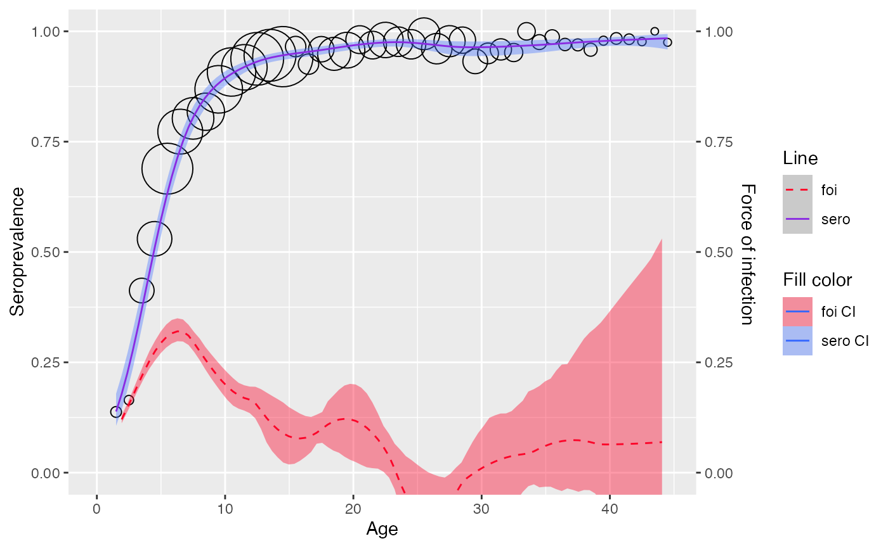
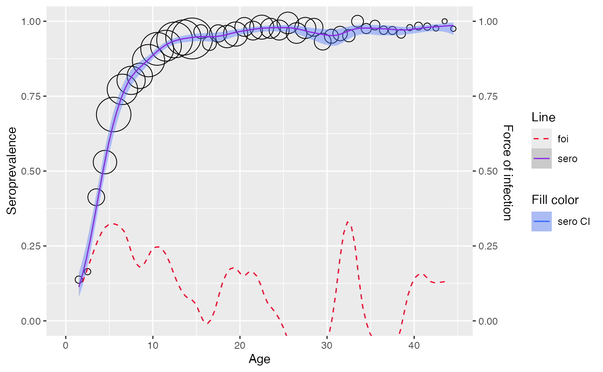
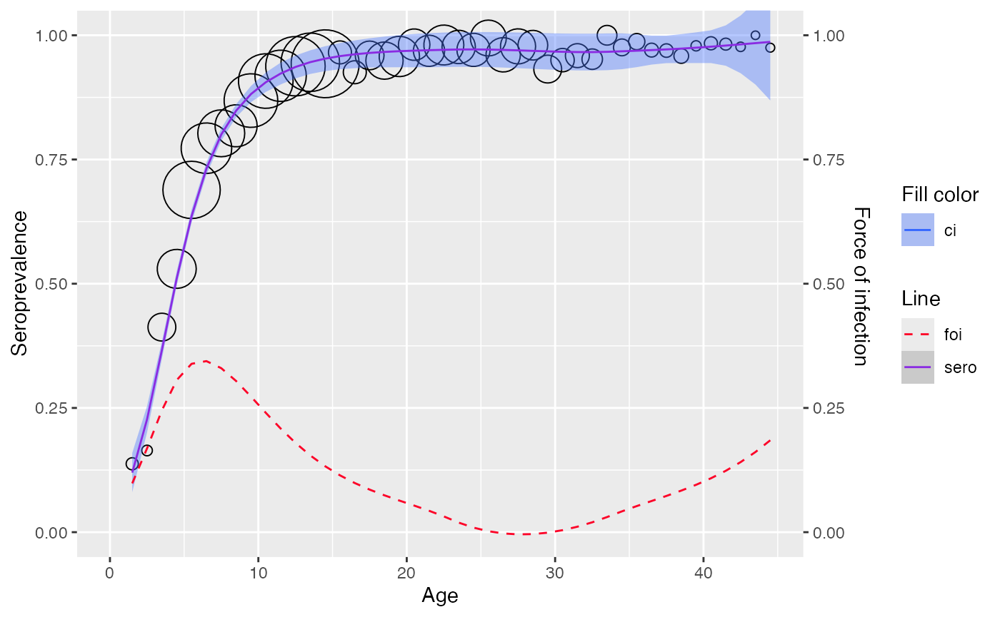
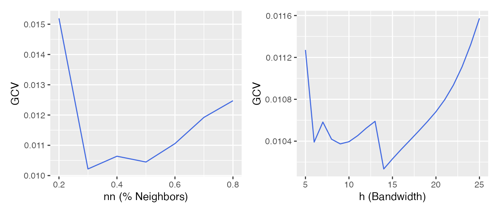

Local estimation by polynomial
Proposed model
Within the local polynomial framework, the linear predictor \(\eta(a)\) is approximated locally at one particular value \(a_0\) for age by a line (local linear, degree \(p=1\)) or a parabola (local quadratic, degree \(p=2\)).
For a general degree \(p\), the linear predictor for a neighbor of \(a_0\), labeled \(a_i\) is equivalent to the Taylor approximation
\[ \eta(a_i) = \eta(a_0) + \eta^{(1)}(a_0)(a_i - a_0) + \frac{\eta^{(2)}(a_0)}{2}(a_i - a_0)^2 + ... + \frac{\eta^{(p)}(a_0)}{p!}(a_i - a_0)^p \]
\(\eta(a_i)\) can be estimated by maximizing
\[ \Sigma_{i=1}^{N} \ell_i \{Y_i, g^{-1} (\beta_0 + \beta_1(a_i-a_0)+ \beta_2(a_i-a_0)^2 ... + \beta_p(a_i-a_0)^p) \} K_h(a_i - a_0) \]
Where:
\(\ell_i\) is the binomial log-likelihood \(\ell_i\{Y_i, \pi\} = Y_ilog\{\pi\} + (1-Y_i)log\{1-\pi\}\)
\(K_h\) is the kernel function with the specified smoothing parameter \(h\), also called “bandwidth” or “window width”
The estimator for the \(k\)-th derivative of \(\eta(a_0)\), for \(k = 0,1,…,p\) (degree of local polynomial) is thus
\[ \hat{\eta}^{(k)}(a_0) = k!\hat{\beta}_k(a_0) \]
The estimator for the prevalence at age \(a_0\) is then given by
\[ \hat{\pi}(a_0) = g^{-1}\{ \hat{\beta}_0(a_0) \} \]
- Where \(g\) is the link function
The estimator for the force of infection at age \(a_0\) by assuming \(p \ge 1\) is as followed
\[ \hat{\lambda}(a_0) = \hat{\beta}_1(a_0) \delta \{ \hat{\beta}_0 (a_0) \} \]
- Where \(\delta \{ \hat{\beta}_0(a_0) \} = \frac{dg^{-1} \{ \hat{\beta}_0(a_0) \} } {d\hat{\beta}_0(a_0)}\)
Refer to Chapter 7.1 of the book by Hens et al. (2012) for a more detailed
explanation of the method.
Fitting data
mump <- mumps_uk_1986_1987To fit a local estimation by polynomials, use lp_model()
function with model parameters include:
nnthe number of nearest neighbors to be included in the approximation (i.e., the nearest neighbor component of the smoothing parameter)hthe constant component of the smoothing parameterdegthe degree of the polynomialkernthe type of kernel
lp <- lp_model(mump, kern="tcub", nn = 0.5, deg=2)
lp
#> Local polynomial model
#>
#> Input type: aggregated
#> Configs: nn=0.5, bandwidth(h)=0, degree=2, kernel=tcub
#>
#> Call:
#> locfit(formula = y ~ lp(age, deg = deg, nn = nn, h = h), family = "binomial",
#> kern = kern)
#>
#> Number of observations: 44
#> Family: Logistic
#> Fitted Degrees of freedom: 6.463
#> Residual scale: 1
plot(lp, foi_ci = TRUE)
#> Running nonparametric bootstrap for FoI confidence intervals, this may take a while
The users can also provide h or nn as a
numeric vector, in which case the package will use the parameter value
that minimize the generalized cross-validation (GCV) criterion.
# ----- Tune nearest neighbor (nn) parameter
lp_model(mump, kern="tcub", nn = seq(0.2, 0.8, 0.1), deg=2) %>%
plot()

Alternatively, use plot_gcv() to show GCV curves for the
nearest neighbor method (left) and constant bandwidth (right) for manual
parameter selection.

Based on the plot, we can then fit the model using the parameter
value that give the lowest GCV (nn = 0.3 and
h = 14)